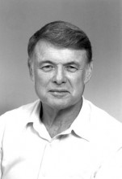

Please note: the AAS Obituaries are temporarily being hosted on this website while their full content is being ingested into the PubPub publishing platform newly adopted by the Bulletin of the American Astronomical Society. When the migration is complete, your existing links will take you to the final, migrated content. Contact peter.williams@aas.org with any questions.
Bruce C. Murray (1931-2013)
Reprinted with permission from Caltech.
Bruce Churchill Murray, Caltech Professor of Planetary Science, Emeritus, and former head of NASA's Jet Propulsion Laboratory (JPL), succumbed to complications of Alzheimer's disease on August 29, 2013. He was 81.
A founder of planetary science, Murray transformed our understanding of the solar system by applying his geologic training to the study of other worlds. He played a key role in equipping JPL's first Mars missions with cameras, an idea often dismissed at the time as a public relations gimmick; and as JPL's director during the Carter and Reagan administrations, he rescued the Galileo mission to Jupiter and Voyager 2's flybys of Uranus and Neptune from the budget ax.
Murray was born on November 30, 1931, in New York City. His parents moved to California soon after, and he graduated from Santa Monica High in 1949. Upon being refused admission to Caltech—"I got a D in physics my senior year," he explained in his oral history—he enrolled at MIT, emerging in 1955 with a PhD in geology. He married his first wife, Joan O'Brien, in 1954.
After graduating, Murray logged offshore drilling cores for the Standard Oil Company until 1958, when he entered the Air Force to fulfill his ROTC commitment. Assigned to Hanscom Field in Bedford, Massachusetts, Murray helped make the high-precision calculations of the geoid—Earth's gravitational field—needed to aim our ballistic missiles accurately.
When Murray's hitch ended in 1960, Caltech geochemist Harrison Brown hired him as a research fellow to study meteorites. Murray's interests were broader; in 1961, he, Kenneth Watson (MS '59, PhD '64), and Brown showed that significant water might remain on the dust-dry moon, preserved in the permanently shadowed areas near the poles—a prediction not confirmed until 2009. "It was a revolutionary idea," says David Stevenson, Caltech's Marvin J. Goldberger Professor of Planetary Science. "Bruce was the first person to think about the role of ice in the solar system, which is now absolutely fundamental to our understanding of, for example, the moons of Jupiter and Saturn."
A casual conversation would set the course of Murray's career. Soon after arriving on campus, he flew out to Dallas to give his final paper on the geoid. His seatmate led the "special projects" branch out at China Lake, a rocket lab that Caltech and the Navy had set up during World War II, and the special project was a top-secret, highly sensitive infrared detector for the heat-seeking Sidewinder missile. (Infrared light has longer wavelengths than visible light and is emitted by all warm objects.) Murray mentioned a desire to make infrared observations of the moon, "and he said, 'Why don't you come up and see us sometime?' I still had [my security] clearance . . . so I did."
Murray took master instrument builder Jim Westphal (then a senior engineer in geology; later a professor of planetary science) with him. Westphal had no security clearance, so they couldn't discuss the detector in any way. Instead, the Caltech duo specified the hardware and electronics needed to mate a detector to a telescope, and the missile men used those specs to build a "black box" containing the detector—on the condition, of course, that the box remained unopened.
The box blew the socks off civilian technology, and in December 1962, Murray, Westphal, and postdoc Robert Wildey (BS '57, MS '58, PhD '62) mounted it on the 200-inch Hale Telescope at Palomar Observatory to look at Venus while JPL's Mariner 2 made the first-ever flyby of another planet. Venus's cloud-covered face is a blank disk, and the spacecraft carried no camera. Instead, an infrared radiometer would construct a temperature profile of the Venusian atmosphere by scanning perpendicularly across the planet's edge. The plan was simply to check the radiometer data; however, the Hale is designed to peer into deepest space, and Venus is so close that a tiny patch of its surface filled the field of view. Unsure of the radiometer's exact aim, Murray and company methodically scanned the entire planet, recording their readings on a roll of chart paper. Discovering that the scans weren't uniform, they cut them up and laid them side by side across a circle drawn to represent Venus. The resulting temperature map had two cold spots on opposite edges of the circle—Venus's north and south poles—revealing the planet's rotational axis for the first time.
JPL's Mariner 4 did carry a camera on the first-ever flyby of Mars in July 1965. Caltech astronomer Robert Leighton (BS '41, MS '44, PhD '47) led the so-called television experiment team, which included Robert Sharp (BS '34, MS '35), chair of the geology division and an expert on landforms, and Murray, by now Caltech's first associate professor of planetary science. Creating a single image takes an awful lot of pixels, and the camera had to share downlink time with the "real" data—the numbers being returned by the other six instruments. The engineers wanted to minimize the transmission load by encoding the images at 3 bits per pixel, or eight shades of gray. Murray insisted on 8 bits (256 shades)—not exactly high-def, but enough to show geologically interesting details. The resulting pictures of a heavily cratered moonscape destroyed the notion of Mars as a habitable, Earthlike world.
Murray and Leighton then used Mariner's atmospheric data to calculate the regional heat exchange between the surface of Mars and its atmosphere. They found that the poles got cold enough each winter to freeze the carbon-dioxide atmosphere into seasonal caps of dry ice, another revolutionary idea that has since proven true—Mars's atmospheric density varies by some 25 percent over the course of its year.
Murray continued exploring Mars as a TV team member on the Mariner 6 and 7 flybys of 1969 and on Mariner 9, which in 1971 became the first spacecraft to orbit another planet, photographing the entire globe in fine detail—eventually, that is. This Mariner arrived at Mars during the thickest dust storm ever seen, as Murray recounted in his oral history. In the weeks that followed, "there was a gradual clearing, like a stage scene, and three dark spots showed up." As the dust continued to settle, the spots developed into huge craters and slowly became the summits of volcanoes—each one some 10 miles tall and as wide as the state of Missouri. Other photos revealed a rift system, the Valles Marineris, long enough to stretch from San Francisco to Baltimore.
Murray revisited the inner solar system in 1974 as the TV team leader for Mariner 10, which flew by Venus and hitherto unexplored Mercury. By then, JPL could make "color" images by compositing pictures taken through various filters mounted on a wheel in front of the camera. Recent ultraviolet observations of Venus from Earth had found a faint, fast-moving feature resembling a sideways 'Y' that seemed to circle the planet every four days, so Murray persuaded JPL to add an ultraviolet segment to Mariner 10's filter wheel. These ultraviolet images—thousands of them—documented an exquisitely complex collection of markings that traced the circulation patterns in Venus's upper atmosphere.
From April 1, 1976 to June 30, 1982, Murray served as director of JPL—a tenure that balanced the highs of the Viking landings on Mars and the Voyagers' flights by Jupiter and Saturn against the constant battles with Washington to keep the Lab afloat. "He was like Lyndon Johnson. He pushed people hard, and he expressed his opinions forcefully," says Professor of Planetary Science Andrew Ingersoll, the "weatherman" on the Voyagers' atmospheric-science team. "But he never held a grudge; after a disagreement he would just forge ahead. And that's the key: he did forge."
Murray mobilized public support for JPL by cofounding The Planetary Society with Carl Sagan and Louis Friedman in 1980, serving variously as vice president, president, and chairman. "Nowadays, NASA expects every mission to do public outreach. They set aside money for it in the budget, and you have to do it," says David Stevenson. "Back then, it was not required, but Bruce felt very strongly that it was the right thing to do."
"Bruce was really dedicated to exploring the frontiers," concurs Ed Stone, the David Morrisroe Professor of Physics, director of JPL from 1991 to 2001 and Voyager's project scientist. "He recognized the power of scientific imaging, and the opportunity it provided to engage the public."
Murray was a fellow of the American Academy of Arts & Sciences and the American Association for the Advancement of Science, and a member of the American Astronomical Society and the American Geophysical Union. One of his books, Journey Into Space, won two awards for science writing. His other honors include NASA's Exceptional Scientific Achievement Medal, NASA's Distinguished Public Service Medal, and two NASA Distinguished Service Medals.
He is survived by Suzanne, his wife of 41 years; five children; and 10 grandchildren.
A public memorial service will be held at 2:00 p.m. on Sunday, November 10, at the Caltech Athenaeum.
Written by Douglas Smith
Obituary written by: Douglas Smith
Additional links:
BAAS Citation: BAAS, 2013, 45, 023